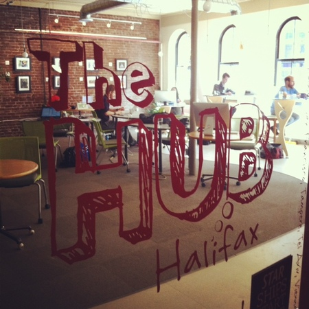
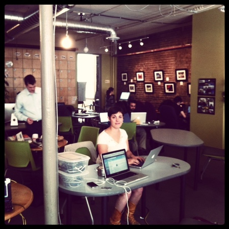
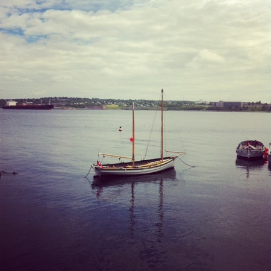

One of the reasons we've been so excited at dojo4 to be one of the co-founders of Hub Boulder, is because it is part of an international network of people and spaces dedicated to sustainable impact, that spans from Madrid to Melbourne and Helsinki to, yes, Halifax.
As a former resident of the genteel wilds of the Canadian Maritimes, I'm overjoyed to be on a summer visit here and thought it was a great opportunity to feel things out at the Hub here in Halifax, now that it's been up and running for a few years. Around the world, the programming and vibe of each Hub is member-driven, and in Halifax the driving theme seems to be a fervent passion for public engagement that brings all sorts of people together to engage in conversation about how to make this an even better place to live. In the last few days I've met music producers, programmers, designers, organizational facilitators, students and entrepreneurs of all kinds that are all inspired by what they feel to be part of a much bigger movement. They were all psyched to have someone here from Hub Boulder and glad to have me in their midst.*
With the lease signed, renovations beginning and the Hub in Boulder slated to open its doors in the fall, I'm excited to see what our unique community is inspired about and proud to see what we might have to offer to this global network...

* When a programmer Hub Halifax asked what kind of work was done at dojo4 and what kind of team we have, I was surprised to hear him say, "You work with ahoward?! Very cool." I think so, too!
 (the Halifax Harbor is just two blocks down the street from the Hub here in downtown Halifax)